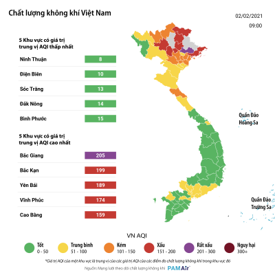
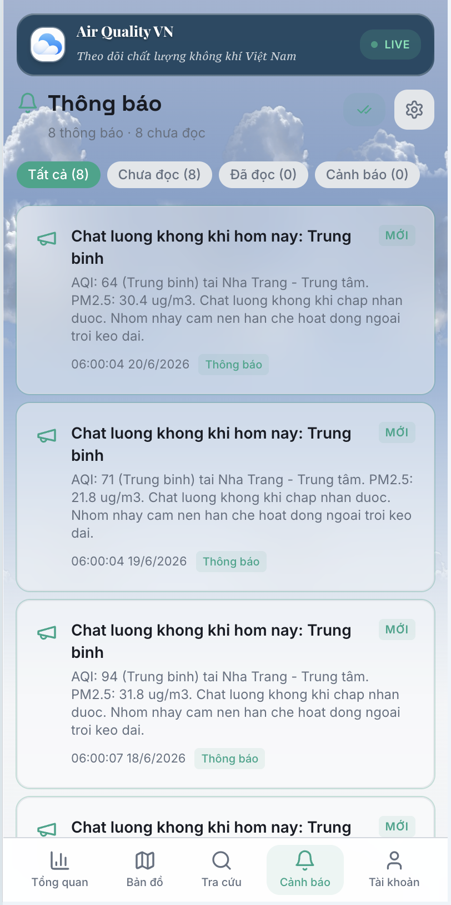

Hệ thống Dashboard theo dõi
chất lượng không khí thời gian thực
tích hợp cảnh báo tự động
Bối cảnh & bài toán
Hạn chế của hệ thống hiện có
- Thiếu cá nhân hóa — không tùy chỉnh ngưỡng cảnh báo
- Không dự báo — chỉ hiển thị hiện tại / lịch sử
- Một nguồn dữ liệu — không fusion, dễ gián đoạn
- Cảnh báo hạn chế — thiếu email / push tự động
- UX chưa tối ưu mobile, thiếu ngữ cảnh tiếng Việt
Đề xuất: Air Quality VietNam
- Fusion 4 nguồn (IQAir · OpenWeather · Open-Meteo · WAQI)
- Dự báo Time Series 12–24h (Prophet · ARIMA · Linear)
- Cảnh báo thông minh theo ngưỡng cá nhân + email
- Bản đồ tương tác kiểu IQAir, mobile-first
- Admin 2 zone: Vận hành & Phân tích tách biệt

Mục tiêu & phạm vi đề tài
Mục tiêu chính
- Xây dựng web dashboard theo dõi AQI thời gian thực tại nhiều địa điểm trên toàn quốc
- Tích hợp cảnh báo tự động theo ngưỡng do người dùng thiết lập
- Vận dụng full-stack · làm việc với API · CSDL chuỗi thời gian · xử lý luồng dữ liệu liên tục
- Ứng dụng phân tích chuỗi thời gian & dự báo vào bài toán môi trường
Phạm vi sản phẩm
Chỉ số chất lượng không khí (AQI)
Các chất ô nhiễm cấu thành AQI
Công thức nội suy tuyến tính (US EPA)
× (C − BP_Lo) + I_Lo
- C = nồng độ đo được · BP = ngưỡng breakpoint · I = giá trị AQI tương ứng
- AQI tổng của trạm = max AQI từng chất → dominant pollutant wins
Kiến trúc tổng thể — luồng dữ liệu
Provider → Ingest
4 API công cộng · cron định kỳ · normalizer chuẩn hóa
PostgreSQL 16
8 schema theo domain · view fusion · chuỗi thời gian
FastAPI Analytics
Forecast · anomaly · seasonal · correlation · health
Dashboard + Admin
React · bản đồ Leaflet · biểu đồ · cảnh báo
air-quality-api
NestJS 11 + MikroORM · service chính. Ingestion 4 provider, JWT/RBAC, REST API, email SMTP.
NestJS · TSair-quality-be
FastAPI + Python · service phân tích. Đọc dữ liệu chuẩn hóa, chạy forecast, ghi kết quả.
Python · MLair-quality-fe
Dashboard người dùng. React 18 + Vite + Leaflet. Chỉ giao tiếp với api.
React 18air-quality-admin
Quản trị 2 zone: Vận hành (api) & Phân tích (be, lazy-load).
React 18Stack công nghệ sử dụng
Backend chính
- NestJS 11 · TypeScript
- MikroORM 6.4
- @nestjs/schedule (cron)
- Nodemailer + SMTP
Backend phân tích
- FastAPI · Python 3.11
- asyncpg + SQLAlchemy 2
- Prophet · statsmodels
- scikit-learn · APScheduler
Frontend
- React 18 · Vite 5 · TS
- Tailwind · shadcn/ui
- Leaflet + leaflet.heat
- Recharts · TanStack Query
Hạ tầng & CSDL
- PostgreSQL 16 (Docker)
- Docker Compose · GHCR
- Caddy + Let's Encrypt
- GitHub Actions CI/CD
Nguồn dữ liệu & ma trận ưu tiên
| Provider | Vai trò | AQI gốc / Pollutant | Cron — tần suất | Priority | Quota |
|---|---|---|---|---|---|
| IQAir nguồn chính | AQI US chất lượng cao | AQI US + dominant (suy PM) | 30 */6 * * * mỗi 6h | 50 | 10.000/tháng |
| Open-Meteo | Ingest chính (chuỗi giờ) | US+EU AQI · 9 trường đủ | 0 * * * * mỗi giờ | 100 | ≈ không giới hạn |
| OpenWeather | Bổ sung 7 pollutant | EU 1–5 → tính lại US AQI | 15 */3 * * * mỗi 3h | 150 | 1.000/ngày |
| WAQI | Tham khảo, detail | AQI US realtime + iaqi | 45 */3 * * * mỗi 3h | 200 | Rate-limited |
Chuẩn hóa & hợp nhất nguồn (Fusion)
Normalizer — 1 interface AqPoint
Mỗi provider format/đơn vị khác nhau → bộ chuẩn hóa riêng, cùng trả về 1 schema thống nhất:
| Open-Meteo | Dùng trực tiếp ~24 điểm/giờ |
| IQAir | Suy PM2.5/PM10 từ AQI (đảo ngược EPA) |
| OpenWeather | Tính lại US AQI từ PM (xuôi EPA) |
| WAQI | Resolve timestamp từ 3 format |
Fusion bằng SQL View
Cùng trạm × cùng giờ có thể có 4 giá trị AQI → chọn 1 đại diện bằng ROW_NUMBER():
ORDER BY priority(iqair→waqi→ow→om),
fetched_at DESC → WHERE rn = 1
- Continuity: IQAir lỗi → tự fallback WAQI → OW → Open-Meteo, người dùng không thấy gián đoạn
- Bảo toàn dữ liệu gốc, view chỉ đọc · query <50ms với ~100k bản ghi
Luồng thu thập (Ingest Pipeline)
Cron trigger
@nestjs/schedule theo INGEST_CRON → tạo 1 pipeline_run
HTTP Fetch
Gọi API provider · AbortController timeout 15s
Log request
outbound_requests: status, latency, succeeded
Raw payload
JSONB + payload_hash dedupe → replay được
Normalize
Parser theo provider → AqPoint; log normalize_runs
UPSERT
air_quality_observations + weather (idempotent)
Alert eval
Phát hiện AQI vượt ngưỡng của user → gửi cảnh báo ngay
Notify
Vượt ngưỡng → tạo notification + gửi email SMTP
CSDL theo mô hình Schema-Per-Domain
catalog
areas, stations — nguồn sự thật địa lý
ingest
providers, pipeline_runs, raw_payloads
core
observations, weather + view fused
iam
users, roles, refresh_sessions
app
alert_rules, notifications, prefs
analytics
anomalies, seasonal, correlation
forecast
model_registry, versions, predictions
ops
audit_logs, configs, health_checks
Vì sao tách 8 schema?
- Bounded context — nhìn tên schema biết ngay bản chất dữ liệu
- Phân quyền cấp schema — api: RW catalog/core/iam · be: READ core, RW analytics/forecast (least privilege)
- Migration độc lập — MikroORM & Alembic không tranh chấp version
- Dễ tách DB: pg_dump -n analytics → DB riêng cho ML
Thiết kế cho dữ liệu chuỗi thời gian
- Khóa duy nhất (station, observed_at, endpoint) → upsert idempotent
- Index BRIN cho chuỗi thời gian, sẵn sàng partition theo tháng
- quality_status: valid / missing / outlier / rejected
- Khoảng tin cậy dự báo: yhat_lower / yhat_upper
Mô-đun phân tích — luồng & lịch chạy
Đọc dữ liệu
Observations theo cửa sổ huấn luyện 7–14 ngày từ PostgreSQL
Chạy thuật toán
3 model forecast song song cùng target "aqi" + các phân tích
Ghi kết quả
Schema analytics/forecast + metrics MAE/RMSE/MAPE
Lịch APScheduler (chạy đêm, tránh giờ cao điểm)
| Daily summary 01:00 | Seasonal 03:30 |
| Anomaly mỗi 2h | Correlation 04:00 |
| Prophet 02:00 | Trend 04:30 |
| ARIMA 02:30 · Linear 03:00 | — |
Vì sao tách service phân tích?
- Batch nặng (Prophet fit vài giây/trạm) tách khỏi luồng request–response nhanh
- be chỉ đọc dữ liệu đã chuẩn hóa, ghi kết quả về analytics/forecast
- be có thể dừng / thay thế mà không ảnh hưởng ingestion & dashboard
- Admin gọi /analytics/forecast/latest → so sánh 3 model
Thuật toán dự báo chuỗi thời gian
Prophet Meta
Mô hình cộng tính y=g(t)+s(t)+h(t)+ε
- Đa chu kỳ (ngày/tuần/mùa) qua chuỗi Fourier
- Xử lý dữ liệu thiếu & outlier tự nhiên
- Bayesian → có khoảng tin cậy
- Changepoint detection xu hướng
ARIMA statsmodels
ARIMA(2,1,2) — thống kê cổ điển
- Giả định stationary sau differencing
- Mạnh khi chuỗi ngắn, ổn định
- Cần chuỗi liên tục → phải interpolate
- Xử lý multi-seasonality hạn chế
Linear Reg. sklearn
Baseline hồi quy tuyến tính
- Đơn giản, nhanh, dễ giải thích
- Tham chiếu để so sánh model khác
- Horizon 24h ổn định
- Không bắt được chu kỳ phức tạp
Các mô-đun phân tích khác
Anomaly
Phát hiện bất thường bằng z-score + IQR, phân mức severity (low→critical)
Seasonal
Profile hourly/daily — xác nhận 2 đỉnh giờ cao điểm 7–9h & 17–19h
Correlation
Ma trận Pearson giữa pollutant — NO₂–SO₂ ≈ 0.73
Trend
Hồi quy tuyến tính: slope, r², direction
Health Impact Scoring
- Thang exposure 0–100 theo cửa sổ 48h, kèm advice sức khỏe
- Hà Nội–Hoàn Kiếm: AQI TB 104.5 (unhealthy-sensitive), trội CO
- Nha Trang: AQI TB 69.1 (moderate) → đúng khác biệt giao thông/khí hậu
Nội suy không gian (toàn lãnh thổ)
- Grid fusion ~701 ô lưới: nền Open-Meteo CAMS + trạm thực (IDW w=3/d²)
- Ward fusion ~3.321 phường/xã từ trạm bán kính 50km (trung thực)
- Grid ML: HistGradientBoosting + GroupKFold, champion–challenger ≥5%
Cảnh báo tự động & thông báo
Cơ chế kích hoạt
Khi phát hiện AQI vượt ngưỡng cá nhân của user → ngay lập tức tạo notification & gửi cảnh báo email đến user.
Cá nhân hóa
Người dùng đặt ngưỡng AQI/PM2.5 & chọn khu vực quan tâm; kênh: in-app + email; có giờ yên tĩnh.

Quản trị 2 Zone & Bảo mật
Zone A — Vận hành api
7 trang CRUD: Dashboard, Users, Stations, Providers & Pipelines, Source Compare, Notifications, Alert Deliveries. Đối tượng: operator / admin.
Zone B — Phân tích be · lazy-load
Hub /analytics, 7 tab: Forecast, Anomaly, Daily Summary, Seasonal, Correlation, Trend, Health. Đối tượng: analyst / admin.
Lazy-Load
React.lazy + Suspense tách chunk Zone B (~350KB). Operator vào /ops không tải code phân tích.
Graceful Degradation
be crash/OOM → Zone A vẫn chạy, Zone B hiện error boundary riêng, tự phục hồi.
JWT RS256 + RBAC
api ký bằng private key, be verify qua JWKS (cache 5'). 5 vai trò: super_admin → user.
Triển khai thực tế (CI/CD)
GitHub Actions
Mỗi repo build Docker image (chỉ từ tag release v*)
GHCR
Đẩy image lên GitHub Container Registry
SSH → VPS
docker compose pull && up · guard theo github.actor
Caddy + HTTPS
Tự cấp/gia hạn Let's Encrypt cho 4 subdomain
4 tên miền production
- airquality.info.vn — Dashboard người dùng
- admin.airquality.info.vn — Quản trị
- api.airquality.info.vn — Service chính
- be.airquality.info.vn — Service phân tích
Hạ tầng VPS
- PostgreSQL 16 + 4 service container trong mạng airquality_prod
- DB không expose ra ngoài — migration chạy trong container API
- Workflow riêng: deploy-infra & db-migrate
- Local: mỗi repo có docker-compose.yml riêng
Kết quả đánh giá mô hình dự báo
So sánh 3 mô hình (target AQI)
| Mô hình | MAE | RMSE | MAPE | Thắng |
|---|---|---|---|---|
| ARIMA(2,1,2) | 17.7 | 22.9 | 20.8% | 30/51 |
| Linear Regression | 20.3 | 26.9 | 27.8% | 21/51 |
| Prophet | 40.6 | 48.5 | 108% | 0/51 |
Phát hiện từ các phân tích khác
- Anomaly (7 ngày): ~200 bất thường (info 125, warning 74, critical 1); nhiều nhất PM2.5 & PM10
- Seasonal: xác nhận 2 đỉnh giờ cao điểm ±20 điểm AQI tại Hà Nội/HCM/Đà Nẵng
- Correlation: NO₂–SO₂ ≈ 0.73 (mạnh nhất), PM2.5–NO₂ ≈ 0.60
- Thu thập: 56 trạm · IQAir ~4.800 req/tháng · OpenWeather ~336 req/ngày → an toàn quota
Kết quả đạt được
Hoàn thành mục tiêu đề ra
- Dashboard realtime đã triển khai thật trên airquality.info.vn, 56 trạm, fusion 4 nguồn
- Kiến trúc microservice rõ ràng (NestJS + FastAPI) tách biệt bằng JWT RS256 + JWKS
- 3 mô hình dự báo + đánh giá MAE/RMSE/MAPE; anomaly, seasonal, correlation, trend, health
- Bản đồ tương tác UX kiểu IQAir + biểu đồ diễn biến & dự báo
Giá trị kỹ thuật nổi bật
- Cảnh báo cá nhân hóa theo ngưỡng & khu vực, gửi email + in-app
- CSDL schema-per-domain + data lineage truy ngược trọn vẹn
- Bảo mật đa tầng: RBAC 5 vai trò, schema ownership
- Admin 2 zone lazy-load, PWA offline + Web Push, CI/CD tự động
Những hạn chế
Về dữ liệu & mô hình
- Horizon dự báo tối đa 24h — chưa đủ dài cho quy hoạch (7–30 ngày)
- Cold-start: dữ liệu vận hành còn ngắn (~6 ngày) → forecast còn sơ bộ
- Chưa A/B testing tự động chọn model tốt nhất theo từng trạm
- Chưa tích hợp dữ liệu giao thông để phân tích tương quan
Về hạ tầng & mở rộng
- Email qua Gmail SMTP thủ công — chưa scale cho hàng chục nghìn user
- Chưa tích hợp cảm biến IoT cộng đồng để tăng độ phủ
- Notification theo polling — chưa event-driven (message queue)
- Phân tích tương quan hiện chỉ dùng hệ số Pearson
Hướng phát triển
| Hạn chế | → Hướng phát triển |
|---|---|
| Horizon ngắn, model cold-start | Deep learning (LSTM, Temporal Fusion Transformer, NeuralForecast) cho horizon 7–30 ngày |
| Chưa tự chọn model theo trạm | A/B testing / champion–challenger tự động theo từng trạm & từng mùa |
| Thiếu dữ liệu giao thông | Tích hợp TomTom / Google Maps Traffic phân tích tương quan giao thông–ô nhiễm |
| Độ phủ trạm giới hạn | Mở rộng cảm biến IoT cộng đồng (PAM Air, sensor.community) + trạm địa phương |
| Email / notification chưa scale | Event-driven (RabbitMQ/Kafka) + dịch vụ email chuyên (SendGrid) |
| Độ chính xác forecast | Đưa dữ liệu thời tiết thành feature cho forecast AQI · API công khai + đa ngôn ngữ |